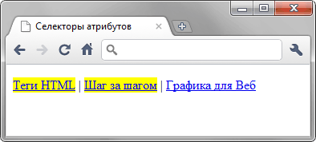

[атрибут*="значение"]
Возможны варианты, когда стиль следует применить к тегу с определённым атрибутом, когда частью его значения является некоторый текст. При этом точно не известно, в каком месте значения включён данный текст — в начале, середине или конце. В подобном случае следует использовать конструкцию *=. Она определяет, что значение атрибута содержит указанный текст.
Синтаксис
[атрибут*="значение"] { Описание правил стиля }
E[атрибут*="значение"] { Описание правил стиля }Пример
<!DOCTYPE html>
<html>
<head>
<meta charset="utf-8">
<title>Селекторы атрибутов</title>
<style>
[href*="htmlbook"] {
background: yellow; /* Желтый цвет фона */
}
</style>
</head>
<body>
<p><a href="http://www.htmlbook.ru/html/">Теги HTML</a> |
<a href="http://stepbystep.htmlbook.ru">Шаг за шагом</a> |
<a href="http://webimg.ru">Графика для Веб</a></p>
</body>
</html>Результат данного примера показан на рис. 1. В примере показано изменение стиля ссылок, в атрибуте href которых встречается слово «htmlbook».

Рис. 1. Изменение стиля для ссылок, в адресе которых встречается «htmlbook»
Спецификация
| Спецификация | Статус |
|---|---|
| CSS Selectors Level 3 | Рекомендация |
| CSS 2.1 | Рекомендация |
| CSS 1 | Рекомендация |
Браузеры
| Internet Explorer | Chrome | Opera | Safari | Firefox |
| 7 | 1 | 9 | 3 | 1 |
| Android | Firefox Mobile | Opera Mobile | Safari Mobile |
| 1 | 1 | 9 | 3 |